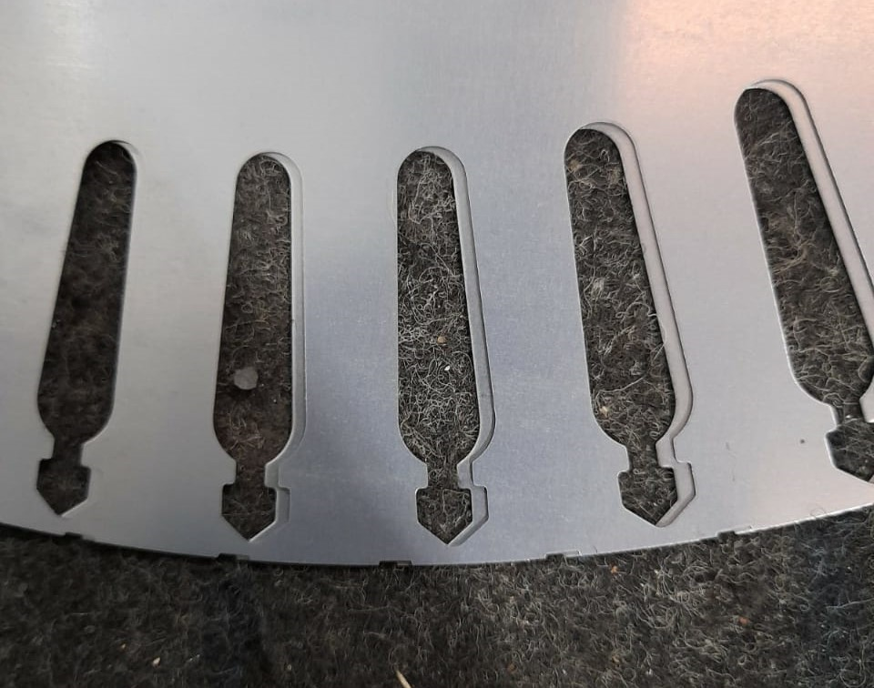
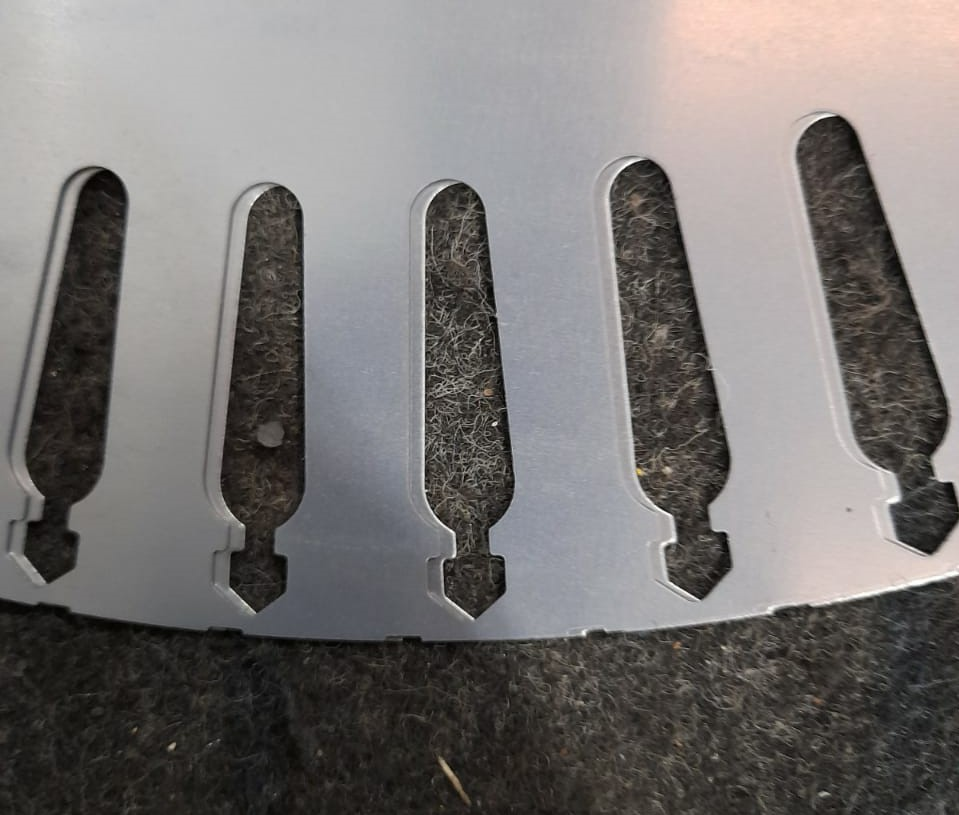
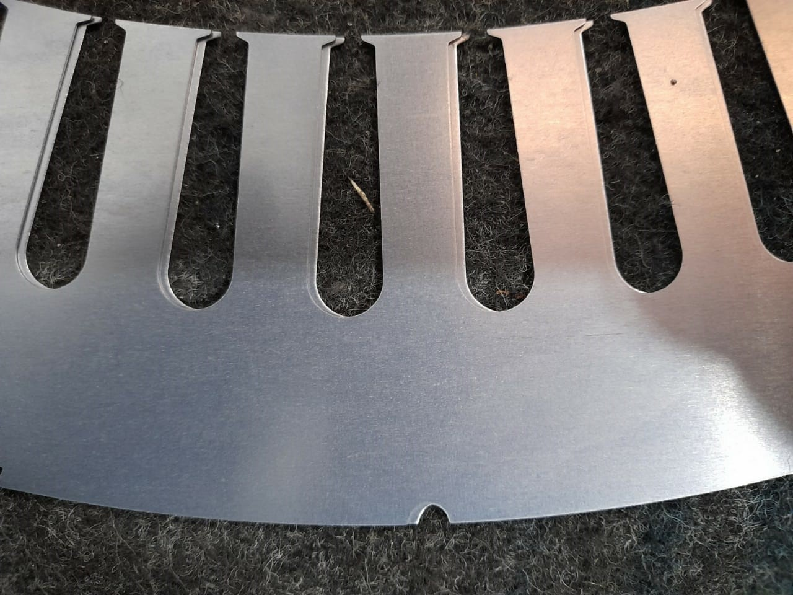
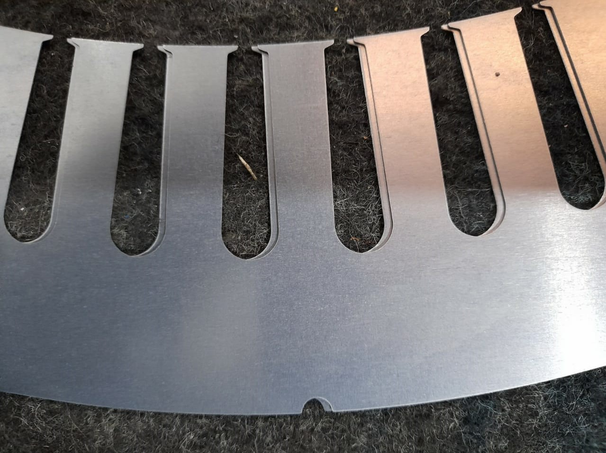

ENTRAR

×
Regulagem de invertido
1. Digite aqui o tamanho do dente da ranhura:
proximo
2. Digite aqui o tamanho de dois dentes de ranhuras,sendo
uma delas com a chapa invertidas:
proximo
3. Agora digite o tamanho
INTERNO
da chapa:
proximo
4. No invertido, com qual das imagens se parece estar igual sua situação:



proximo
Calcular